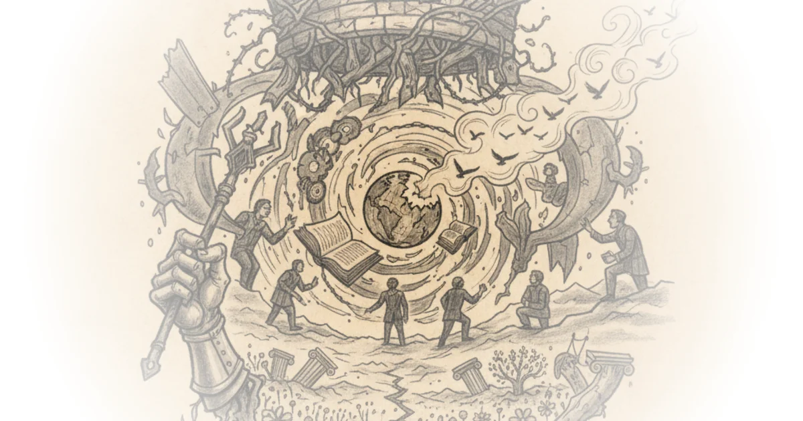

Thoughts on the Mirror and the Light and the Tudor Revolution in Government Mark Koyama · ·Aug 11, 2025 · 16 min read · History
Feudalism as a Contested Concept in Historical Political Economy Mark Koyama · ·Feb 24, 2025 · 11 min read · History 